Silent Hill 2 es la segunda entrega de la serie de videojuegos Silent Hill y el primer juego de la
franquicia que se publicó para PlayStation 2. Se lanzó en Norteamérica el 24 de septiembre de 2001 para la
PlayStation 2 de Sony y más tarde fue portado para la Xbox de Microsoft (con el subtítulo "Inner Fears", el
cual incluyó características inéditas, como un nuevo subescenario) y PC.
Los cambios añadidos al port Inner Fears también fueron incluidos en los re-lanzamientos de las ediciones
especiales Greatest Hits/Platinum Edition del juego para PlayStation 2.
Fue re-hecho con gráficos en alta definición y nuevas voces en el Silent Hill HD Collection, junto con
Silent Hill 3.
Trama
Prólogo
James Sunderland ha llegado al pueblo de Silent Hill después de haber recibido una carta de su esposa, Mary,
a pesar de que había muerto de una enfermedad hace tres años. La carta afirma que Mary lo espera en su
"lugar especial", lo que confunde a James. Después de salir de la plataforma de
observación del pueblo y viajando hacia Silent Hill, James cruza el cementerio Toluca y se encuentra a
Angela Orosco, una adolescente que llegó al pueblo en busca de su madre, su hermano y su padre.
Cuando James llega a Silent Hill descubre que no es el mismo pueblo, hermoso como lo fue en el pasado.
Además de la extraña niebla omnipresente, el pueblo entero parece estar deteriorado y abandonado. Cuando
descubre que el camino hacia su primer destino, el parque Rosewater, está cortado, James decide viajar a
través de un complejo de apartamentos para llegar a lo que él cree que podría ser el "lugar especial" que
Mary mencionó en su carta.
Apartamentos
Una vez dentro de los apartamentos, James se encuentra con una pequeña niña la cual le pisa su mano y se va
corriendo. Poco después, se encuentra con Pyramid Head, un monstruo humanoide cuya cabeza está completamente
oscurecida por un casco gigante piramidal de metal. James más tarde se encuentra con un joven obeso, Eddie
Dombrowski, mientras vomita en uno de los baños del apartamento.
Luego de esto, James se encuentra con Angela de nuevo, la cual está acostada en el suelo con un cuchillo en la
mano frente a un gran espejo. James la convence para que le entregue el cuchillo por su propia seguridad,
después de lo cual huye con un pánico inusual.
Parque Rosewater
Cuando James llega finalmente al parque Rosewater conoce a una mujer llamada María, la cual luce casi
idéntica a su difunta esposa, Mary, pero con una actitud más insolente.
Durante sus viajes, ella le revela cosas que sólo él o Mary saben. María acompaña a James en su intento de
llegar a su segundo supuesto "lugar especial", el hotel Lakeview. James entra en el Pete's Bowl-O-Rama,
donde se encuentra con Eddie nuevamente. Luego, aparece de nuevo la niña, la cual huye cuando James la ve.
Eddie le revela a James que su nombre es Laura. En el exterior, María afirma haber visto a Laura y, por su
preocupación hacia ella, le dice a James para tratar de seguirla.
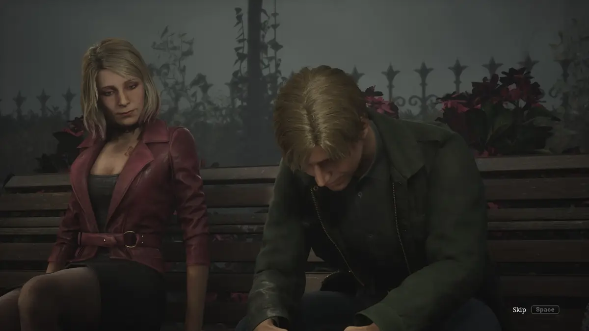
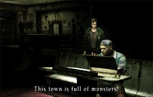
Hospital
Su búsqueda los lleva al hospital Brookhaven, donde María se enferma, e insiste en descansar en una de
las habitaciones del mismo. James encuentra a Laura en una de las habitaciones, pero se enfada con ella
por que afirma haber conocido a Mary desde el año pasado, en clara contradicción con su creencia de que
ha muerto hace tres años. Luego de esto, Laura lo encierra en una habitación llena de monstruos, bajo el
pretexto de que ahí se encontraba una carta de su esposa.
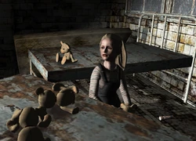
Después de que los derrota, el hospital sufre un dramático cambio repentino hacia el Otro Mundo,
donde James vuelve a la habitación del hospital para descubrir que María ya no está. James se
encuentra posteriormente a María en el sótano del hospital, sin embargo, María se enfurece, alegando
que James la había abandonado. Después de que María se calme, insiste en encontrar a Laura.
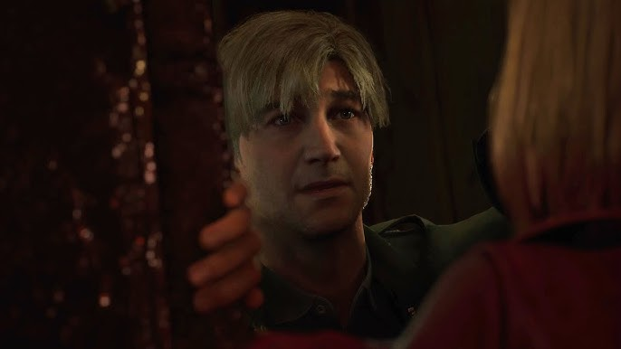
Pyramid Head aparece de nuevo y persigue a James y a María a través del sótano del hospital. Pyramid Head
logra matar a María mientras tratan de escapar a través de un ascensor. De nuevo, solo y triste por la
pérdida de María, James decide volver a centrarse en su objetivo original de su búsqueda por Mary. Él
deja el hospital y encuentra una llave enterrada debajo de una estatua en el parque Rosewater, lo que
lo lleva a la Sociedad Histórica de Silent Hill.
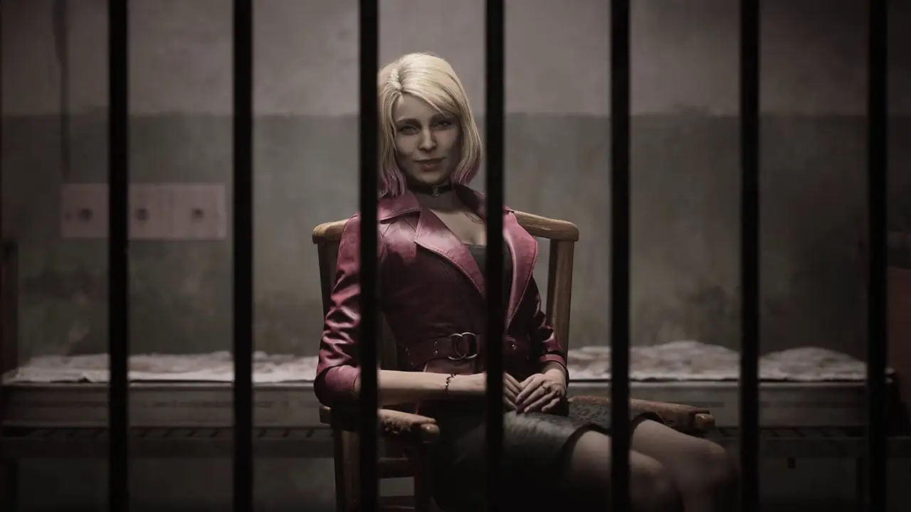
Prisión
En esta zona, James encuentra a María, milagrosamente viva y encerrada en una celda de la prisión, la cual
le sorprende con recuerdos de Mary. Él le dice que la sacará de ahí, pero al salir y luego volver y entrar
en la celda, James descubre que ha sido asesinada una vez más.
La siguiente área, James se reúne con Angela y cuenta la historia de por qué Angela y Eddie están
en el pueblo. James salva a Angela de una monstruosa manifestación de su padre.
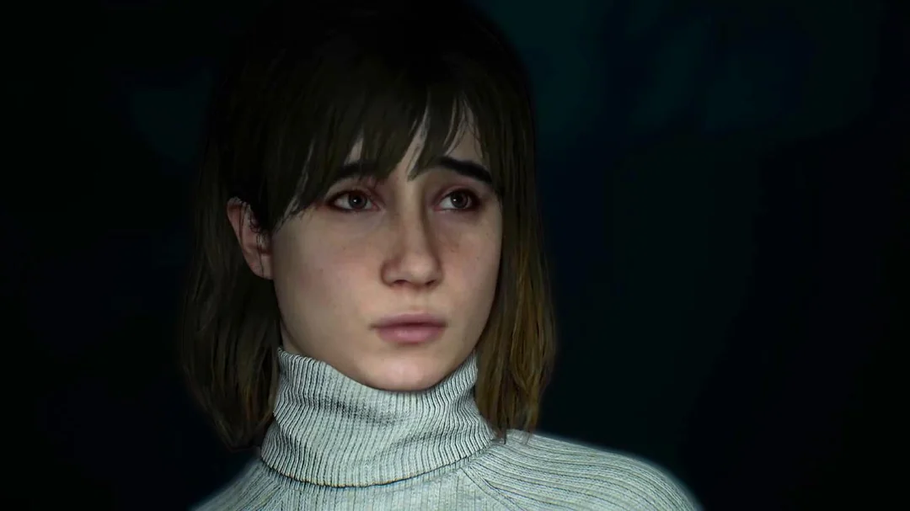
Se revela que Eddie sufrió años de bullying por parte de sus compañeros. También queda claro que a su
llegada a Silent Hill, se volvió loco. Tras esto, la carta que supuestamente recibió de Mary se queda en
blanco, lo que indica que la carta en sí fue algo que hizo la propia mente de James, y que en realidad nunca
existió en primer lugar.
Hotel Lakeview
James logra salir del Laberinto y rema en barco hasta el hotel Lakeview, con la esperanza de encontrar a
Mary. Una vez allí, se encuentra una vez más con Laura, y ella le da la carta de la cual antes ella
supuestamente le mintió a James; la misma revela que Mary quería adoptarla, lo que al mismo tiempo confirma
las afirmaciones de Laura sobre conocer a Mary desde el año pasado.
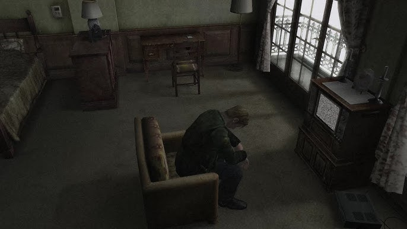
La verdad final es mostrada a James cuando éste ve una cinta de vídeo que al parecer dejó en el hotel hace
tres años, la cual demuestra que acabó con la vida de su esposa, quien padecía de una enfermedad terminal.
Laura, que estaba lista para salir del pueblo, se encuentra a James y él le revela la verdad. Laura se enfada
con él por lo de la cinta. En la radio que James ha estado llevando y que le advertía de la presencia de
monstruos suena un mensaje de Mary, pidiéndole que la encuentre.
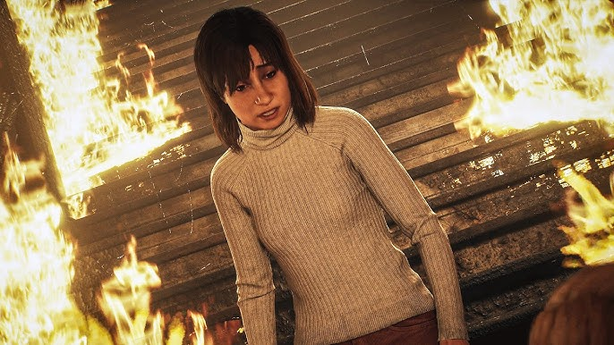
James explora el resto del hotel, y aparenta ser nada más que los restos de un edificio que se ha quemado
previamente a causa de un incendio. James encuentra a Angela en unas escaleras en llamas, y ella le pide
que le devuelva el cuchillo. James se rehúsa a dárselo. Cuando Angela sube por las escaleras le dice a
James que su vida siempre fue un infierno. Después, sube completamente las escaleras, y desaparece entre
las llamas.
Parte Final
El final se acerca, James encuentra otra vez a María después de volver a resucitar, gritando por ayuda,
pero es rápidamente asesinada por dos Pyramid Head. James se da cuenta de que han sido creados para
castigarlo por sus pecados, y, acto seguido, los confronta. Después de que se ven gravemente debilitados,
acaban con su vida para indicar que su propósito ha sido cumplido.
James cruza un pasillo donde escucha una conversación previa que tuvieron él y Mary, cuando ella aún
estaba viva; en esta conversación, James le da algunas flores, pero ella no las acepta, afirmando que ella
es demasiado repugnante como para merecer las flores y le grita con furia a James. Al final de esta conversación,
Mary desesperadamente le suplica a James que se quede con ella.
James entra en un complejo metálico de gran tamaño con una larga escalera. En la parte superior de la escalera,
se encuentra con una mujer (dependiendo del final, la mujer puede ser María o Mary) la cual se transforma en
una manifestación del dolor de Mary. Después de que James la derrota, el juego llega a su fin y se muestra uno
de los siguientes finales.
Finales
Silent Hill 2 no tiene un final canónico (final real). La cuarta entrega de la serie reveló que James
desapareció cuando fue a Silent Hill. Las declaraciones oficiales de Konami han mantenido la canonicidad y
ambigüedad de los finales, diciendo con las declaraciones que esencialmente cualquiera de los finales puede
ser considerado como "real" en función de las acciones del jugador y su interpretación de la historia. En
los siguientes videos se muestran todos los finales tanto en el original como en el Remake.
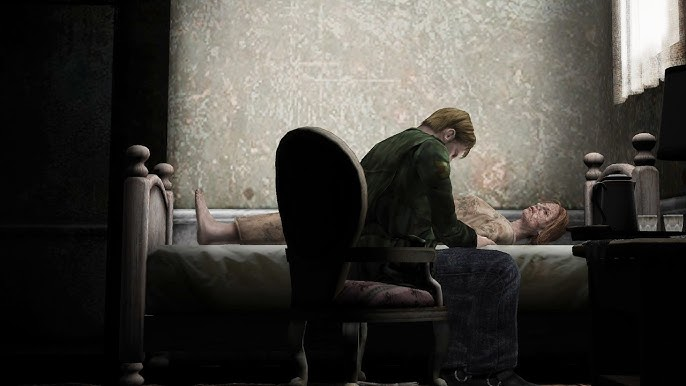
Final "Dejar" y "En agua"
La mujer en la sala es María, una vez más, haciendo un último intento
para conseguir que James se quede con ella. Sin embargo, James la rechaza, y ella se convierte en un
monstruo similar a los monstruos que cuelgan en el hospital, convirtiéndose en el jefe final.
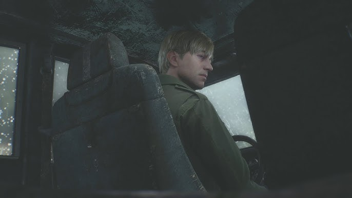
Tras su derrota, James puede salir del pueblo con Laura después de haberle concedido una última
reunión con Mary y poder redimirse (como se muestra en el final "Dejar"), o ahogándose en el lago Toluca
(como se muestra en el final "En agua"). La canción del final Dejar es
Overdose Delusion y la del final En agua es Angel's Thanatos.
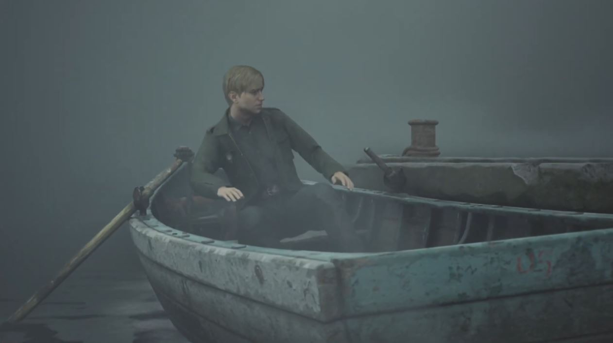
Final "Renacimiento"
Este final sólo se consigue en una segunda partida. En este final James también se enfrenta a
María, pero después se lo ve remando en bote hacia una iglesia ubicada en una isla para así utilizar los
nuevos objetos recogidos en el juego y resucitar a Mary haciendo frente a los "Dioses Antiguos de Silent
Hill", con un desconocido resultado. La canción de este final es The Reverse Will.
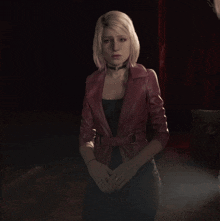
Final "María"
Si el jugador pasa mucho tiempo con María y la protege así de los monstruos (también de Pyramid Head
en el sótano del hospital), la mujer en la sala será Mary, que no ha perdonado a James por haberla
matado. A continuación, se convierte en el jefe final, exactamente igual como lo hace María en los
otros finales, y después de su derrota James la rechaza por ser tan sólo otra manifestación de su
mente. A continuación, se encuentra a María, inexplicablemente viva de nuevo, y deja el pueblo junto
con ella. Al salir, sin embargo, María comienza a toser, lo que implica que tiene la misma enfermedad
que sufría Mary y que los acontecimientos que llevaron a James al pueblo se pueden repetir. La canción
de este final es Promise.
Final "Perro" y "OVNI"
También hay dos finales de humor disponibles en una segunda partida. El primero, el final "Perro" ("DOG"),
con James descubriendo a un perro detrás de una puerta cerrada que al parecer era el que controlaba todos
los acontecimientos del juego desde un panel de control (curiosamente, DOG al revés es GOD, que significa
Dios, en inglés). Y el segundo, el final "OVNI", el cual es una continuación del final OVNI del primer juego
de la saga, añadido en la versión extendida del juego. En él, James es secuestrado por un grupo de
extraterrestres con la ayuda del protagonista del primer juego, Harry Mason.